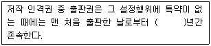
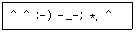
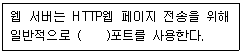
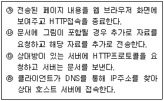
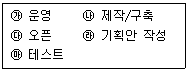

인터넷정보관리사-2급 (2010-03-13 기출문제)
1과목: 인터넷의 이해
1. 다음 중 인터넷의 정의를 가장 적절하게 설명한 것은?
- 전 세계의 윈도우를 사용하는 컴퓨터들이 연결되어 있는 컴퓨터 네트워크이다.
- 많은 서버들이 클라이언트에 연결하여 서비스를 이용하는 통신망이다.
- TCP/IP로 연결된 네트워크들이 결합된 ‘네트워크의 네트워크’이다.
- 미국 국방성이 군사적 목적으로 구축한 NSFNET에서부터 처음 시작된 통신망이다.
(정답률: 60%)

2. 인터넷 프로토콜에 대한 내용 중 가장 거리가 먼 것은?
- 인터넷의 표준 프로토콜은 TCP/IP이다.
- 인터넷의 표준 프로토콜은 컴퓨터가 정보를 주고받을 때,따라야할 통신규약이다.
- 인터넷의 표준 프로토콜은 1979년에 도입 되었다.
- TCP/IP는 빈트 서프와 로버트 칸이 처음 설계하였다.
(정답률: 59%)
3. 인터넷의 양적 팽창을 나타내는 대표적인 지수로 인터넷에 연결되어 IP주소를 가지고 있으면서 이름이 네임 서버에 등록되어 있는 컴퓨터 수를 의미하는 것은?
- 초고속 인터넷 가입자 수
- KR 도메인 수
- 인터넷 이용자 수
- 호스트 수
(정답률: 77%)
4. 해설요구문서(RFC)에 대한 설명으로 옳은 것은?
- 컴퓨터 통신 및 인터넷과 관련된 표준 규격을 제시하는 문서이다.
- 출판된 RFC 문서는 필요에 따라 언제든지 변경이 가능하다.
- 모든 RFC 문서는 인터넷 사이트에서 검색은 가능하나 다운로드할 수 없다.
- 한글로 번역된 RFC 문서 정보는 제공되지 않고 있다.
(정답률: 56%)
5. 영문 도메인에 관련된 설명으로 맞는 것은?
- 언더바(_)나 공백(space)을 사용할 수 있다.
- 영문자 대ㆍ소문자의 구별이 있다.
- 기관의 이름,기관의 성격,국가 표시 등으로 구성된다.
- 도메인의 각 부분은 콜론(:)으로 구분한다.
(정답률: 40%)
6. 사적인 용도로 사용되는 개인 도메인으로 옳은 것은?
- co
- com
- pe
- go
(정답률: 53%)
7. 다음 중 최상위 도메인(TLD)이 아닌 것은?
- com
- pro
- gov
- or
(정답률: 40%)
8. 기존에 사용되어 온 IPv4 주소체계의 한계를 극복하기 위해 개발된 새로운 주소체계는?
- A클래스
- NIDA
- IPv6
- 버추얼 도메인 네임
(정답률: 88%)
9. 웹 사이트가 IP주소로는 접속이 되나 영문 주소로는 접속이 되지 않는다면 가장 문제되는 부분은 다음 중 무엇인가?
- DNS(DomainNameSystem)
- IPv4
- ISP(InternetServiceProvider)
- TLD(TopLevelDomain)
(정답률: 54%)
10. 다음 중 FTP(FileTransferProtocol)전용 프로그램이 아닌 것은?
- AL_FTP
- WS_FTP
- Cute_FTP
- Telnet
(정답률: 알수없음)
11. 다음 중 전자우편 보안을 위한 암호화 도구는?
- PGP
- From
- Date
- Webmail
(정답률: 39%)
12. 인터넷 상에서 전자우편을 이용하여 공통의 관심사를 가진 사람들과 정보나 의견을 주고 받기 위해 이용하는 서비스는?
- 메일서버
- Telnet
- FTP
- 메일링리스트
(정답률: 62%)
13. AnonymousFTP서비스를 이용할 때 입력해야 하는 ID로 옳은 것은?
- 본인의 전자우편 주소
- 가입시 본인이 입력한 ID
- anonymous
- 본인의 주민등록번호
(정답률: 34%)
14. FTP 서비스 이용 방법에 대한 설명 중 틀린 것은?
- 파일 뿐만 아니라 폴더 전송도 가능하다.
- 웹 브라우저로 FTP 서비스를 이용할 때는 별도의 FTP전용프로그램이 필요 없다.
- ID와 비밀번호를 입력해야 접속 가능한 특정 FTP서버는 웹 브라우저로 이용할 수 없다.
- 웹 브라우저로 FTP 서버에 접속하여도 파일을 다운로드 받을 수 있다.
(정답률: 58%)
15. 다음 중 유즈넷(USENET)서비스를 이용하기 위해 필요한 요소가 아닌 것은?
- NNTP
- 뉴스서버
- 뉴스리더
- IRC
(정답률: 50%)
16. 다음 중 뉴스그룹의 대표적인 모그룹이 아닌 것은?
- com
- news
- soc
- talk
(정답률: 35%)
17. 웹 상에서 사용하는 대부분의 메신저에서 일반적으로 제공하는 서비스가 아닌 것은?
- 쪽지 보내기
- 파일 전송하기
- 메일 보내기
- 실시간 다국어 번역
(정답률: 79%)
18. 정부와 소비자와의 전자적 거래로 인터넷을 통하여 민원서류신청,세금납부 등이 가능한 전자상거래 유형은?
- BtoB
- BtoC
- G toB
- G toC
(정답률: 57%)
19. 무선주파수 인식 통신 기술이라 하며,무선 주파수를 이용하여 상품의 판촉,추적,관리 할 수 있는 기술은 무엇인가?
- RFID
- Escrow
- CRM
- ERP
(정답률: 62%)
20. 다음 중 개인정보보호법에 따른 ‘개인정보’에 해당하는 것은?
- 서울대학교 컴퓨터공학부 남학생 + 2009년 2학기 학과 수석한 학생
- 서울대학교 컴퓨터공학부 여학생 + 18세 이상 학생
- 서울시 진리아파트 거주 고등학생 +공부를 잘하는 학생
- 서울시 대학생 +김씨 성을 가진 여학생
(정답률: 45%)
21. 다음 ( )안에 들어갈 내용으로 가장 알맞은 것은?

- 3
- 5
- 10
- 50
(정답률: 53%)
22. 다음 중 UN 전문기관의 하나로 지적재산권에 관한 국제조약을 제정하는 기구는?
- WTO
- ISO
- NIDA
- WIPO
(정답률: 30%)
23. 전자서명법에서 전자서명 생성정보가 가입자에게 유일하게 속한다는 사실을 확인하고 이를 증명하는 행위를 무엇이라 하는가?
- 날인
- 서명
- 인증
- 심의
(정답률: 38%)
24. 인터넷에서 네티즌들과 대화를 할 때 사용하지 않아야하는 것은?
- 상투어
- 이모티콘
- 명확한 언어
- 약어
(정답률: 44%)
25. 인터넷에서 대화시 사용하는 다음과 같은 기호를 무엇이라고 하는가?

- 약어
- 속어
- 이모티콘
- 신조어
(정답률: 50%)
26. 우리나라는 2007년부터 인터넷 실명제 시행으로 주민등록번호나 아이핀 등으로 신분이 확인된 사람만 온라인 게시판에 정보를 올릴 수 있도록 하고 있다. 그 목적에 가장 가까운 것은?
- 스팸 메일 차단
- 안전한 인터넷 사용
- 광고 메시지 차단
- 온라인 전자상거래
(정답률: 69%)
27. 컴퓨터 CPU(중앙처리장치)의 속도를 높이기 위해 캐시메모리에 주로 사용되는 것은?
- DRAM
- SRAM
- VRAM
- ROM
(정답률: 42%)
28. 컴퓨터를 사용할 수 있도록 운영체제가 주기억 장치에 로딩되어 사용자 명령을 실행할 수 있는 상태까지의 과정을 무엇이라고 하는가?
- 부팅
- 실시간처리
- 플러그앤플레이
- 멀티태스킹
(정답률: 72%)
29. 하나의 명령으로 여러 개의 명령을 수행하도록하는 기능을 통하여 문서를 읽을 때 감염되는 바이러스로,마이크로소프트사의 엑셀과 워드 파일에 주로 감염되는 바이러스는?
- 부트 바이러스
- 팜 바이러스
- 매크로 바이러스
- 웜 바이러스
(정답률: 48%)
30. 다음 중 성격이 다른 프로그램은?
- ALZIP
- WinRAR
- WinPLE
- WinZIP
(정답률: 47%)
31. 인터넷 전용회선은 속도에 따라 여러 가지가 있다. 다음 중 전용회선의 종류가 아닌 것은?
- T3
- E1
- T1
- S7
(정답률: 60%)
32. 다음 중 전용선을 이용하여 인터넷을 사용할 때 필요한 장비가 아닌 것은?
- 랜 카드
- 허브
- 사운드카드
- 라우터
(정답률: 59%)
33. 다음 xDSL을 이용한 접속 종류중 상향속도와 하향속도가 같은 것은??
- HDSL
- ADSL
- RADSL
- VDSL
(정답률: 28%)
2과목: 인터넷 자원 탐색
34. 국내에서 시행되는 초고속 인터넷 품질보장제도(SLA)의 취지에 해당되지 않는 것은?
- 최저 속도 보장
- 장애 발생시 처리 기준 강화
- 개통 기한 보장
- 인터넷 사용료 안정
(정답률: 30%)
35. 케이블 TV망의 장단점이 아닌 것은?
- 케이블 모뎀을 통해 서비스를 이용하므로 전화선과 별도로 사용할 수 있다.
- 고정 IP주소 방식을 사용한다.
- 가입자 증가로 인해 전송속도는 감소된다.
- 케이블 TV망이 설치된 지역에서만 서비스가 가능하다.
(정답률: 22%)
36. 다음 ( )안에 가장 알맞은 것은?

- 8080번
- 88번
- 80번
- 21번
(정답률: 44%)
37. 1989년 CERN의 팀 버너스에 의하여 개발되었으며 멀티미디어 데이터를 웹 브라우저에서 볼 수 있도록 지원하는 하이퍼텍스트 시스템은 무엇인가?
- Internet
- USENET
- TCP/IP
- WWW
(정답률: 36%)
38. 웹의 작동 순서를 가장 올바르게 연결한 것은?

- 가-나-다-라
- 다-나-라-가
- 나-다-라-가
- 라-다-나-가
(정답률: 55%)
39. 웹 서버의 서버 프로그램에 포트번호를 89로 지정하고 이 웹 사이트에 접속하려고 할 때 가장 옳은 것은?
- 도메인 주소에 반드시 포트번호를 ‘:89’로 입력해야만 사이트에 접속할 수 있다.
- 도메인 주소 앞에 포트번호 ‘80:89’로 입력해야 한다.
- 포트번호를 입력하지 않아도 접속이 가능 하다.
- 포트번호는 입력하지 않아도 되나 ID와 비밀 번호는 반드시 입력해야 한다.
(정답률: 36%)
40. HTTP,FTP,SMTP는 ISO에서 제정한 OSI7계층 중 어느 계층에 속하는가?
- 응용계층
- 물리계층
- 전송계층
- 서비스계층
(정답률: 42%)
41. 회사 홈페이지를 구축하려고 할 때 홈페이지 구축 과정을 가장 올바르게 연결한 것은?

- 나-가-마-다-라
- 마-라-다-가-나
- 라-나-마-다-가
- 라-나-마-가-다
(정답률: 72%)
42. 다음 중 웹의 표준인 HTML 문서로 저장 할 수 없는 것은?
- MSPowerPoint
- MSWord
- 그림판
- 한글 2007
(정답률: 45%)
43. 다음 태그 명령어 중 문단 나누기 때 사용하는 명령어는 무엇인가?
- <p>
- <a>
- <font>
- <hr>
(정답률: 37%)
44. 다음 중 목록을 만드는데 사용되는 태그가 아닌 것은?
- <dl>
- <ul>
- <li>
- <br>
(정답률: 43%)
45. 다음 중 멀티미디어의 구성요소가 아닌 것은?
- 텍스트
- 이미지
- 웹브라우저
- 비디오
(정답률: 36%)
46. 멀티미디어의 3차원 이미지를 만드는데 사용되는 소프트웨어는?
- 그림판
- 하이퍼터미널
- 워드패드
- 3D MAX
(정답률: 71%)
47. 다음 중 마이크로소프트사에서 개발한 오디오/비디오 포맷 압축 방식으로 윈도우 미디어 플레이어용 스트리밍 기능이 있는 것은?
- WMV
- MPEG
- MOV
- ASF
(정답률: 14%)
48. 다음 중 웹 브라우저에서 지원하는 이미지 파일 형식이 아닌 것은?
- GIF
- AVI
- JPG
- PNG
(정답률: 65%)
49. 스트리밍 기술을 적용하는 예로서 가장 옳지 않은 것은?
- 파일의 크기가 커서 메모리에 저장이 어려운 경우
- 웹 상에서 다운로드 받아 실행하기에는 시간이 많이 걸리는 경우
- 인터넷 회선 속도가 느리고 자주 끊기는 현상이 발생하는 경우
- RemoteSite에서 데이터를 실행하는 경우
(정답률: 30%)
50. 아이폰과 같이 운영체제(OS)가 내장되어 있어서 인터넷을 사용하거나 컴퓨터처럼 사용 할 수 있는 핸드폰을 무엇이라 하는가?
- 스마트폰
- 플러그인폰
- WCDMA폰
- CDMA폰
(정답률: 75%)
51. 대표적인 플러그 인 프로그램으로 미국 어도비 시스템스에서 개발한 AcrobatReader로 작성한 파일 형식은 무엇인가?
- SWF
- PPT
- ASF
(정답률: 65%)
52. 플러그 인 프로그램이 필요한 가장 적절한 이유는 어느 것인가?
- 웹 브라우저가 자체적으로 실행하지 못하기 때문에
- 파일 용량이 너무 커서 실행이 어렵기 때문에
- 인터넷 회선 속도가 너무 느려서 실행하기 어렵기 때문에
- 공개 자료실을 이용하여 쉽게 다운로드 할 수 없기 때문에
(정답률: 알수없음)
53. 다음 중 웹 브라우저로 사용할 수 없는 서비스는?
- WWW(WorldWideWeb)
- Telnet
- FTP(FileTransferProtocol)
- IRC(InternetRelayChat)
(정답률: 16%)
54. 웹(Web)에 대한 설명으로 옳은 것은?
- 피어-투-피어(PeertoPeer)구조로 이루어진 집중 네트워크이다.
- HTTP프로토콜을 사용하여 통신한다.
- 인터넷 익스플로러는 MS윈도우즈만의 전용 브라우저이다.
- 웹 브라우저에서 전자우편을 사용하기 위해서는 별도의 전용 클라이언트 프로그램이 필요하다.
(정답률: 54%)
55. 다음 브라우저들 중에서 성격이 다른 하나는?
- 링스(Lynx)
- 모자익(Mosaic)
- 핫자바(HotJava)
- 인터넷 익스플로러(InternetExplorer)
(정답률: 53%)
56. 웹 브라우저에 대한 설명 중 옳지 않는 것은?
- 이전에 접속한 홈페이지를 다시 방문할 경우 로딩하는 시간은 처음 접속보다 적게 소요된다.
- 동영상을 보기 위해서는 대부분 플러그인 프로그램을 설치하여야 한다.
- 모든 홈페이지의 텍스트와 이미지는 저작권 보호를 위해 절대 인쇄할 수 없다.
- 웹 브라우저를 여러 개 실행하여 브라우저 마다 각각 다른 홈페이지를 접속하여 사용 할 수 있다.
(정답률: 48%)
57. 1989년 NCSA(NationalCenterforSupercomputing Application)에서 개발한 최초의 그래픽용 웹 브라우저는?
- 인터넷 익스플로러(InternetExplorer)
- 모자익(Mosaic)
- 삼바(Samba)
- 핫자바(HotJava)
(정답률: 44%)
58. 웹 브라우저에 대한 설명으로 적절치 못한 것은?
- 웹 서버로부터 정보를 요청하고 불러와서 사용자 컴퓨터 화면에 보여주는 역할을 한다.
- 웹 서버에 있는 자료의 주소를 URL 또는 URI라는 형식으로 이용한다.
- 텍스트 뿐만 아니라 다양한 멀티미디어 형식의 파일을 지원한다.
- 서버 컴퓨터에 설치되어 사용자의 요구에 응답하는 프로그램이다.
(정답률: 39%)
59. 인터넷 익스플로러 7. 0의 기능과 그에 대한 올바른 설명을 짝지은 것은?
- 자동 찾기 기능 -URL이나 키워드를 입력 할 때 이전 입력된 내용에서 첫 글자가 같으면 자동으로 나머지 글자들을 완성시켜주는 것
- 히스토리 기능 -최근 열어본 페이지 목록을 주소 표시줄 아래쪽에 표시하는 것
- 목록보기 기능 -최근 접속했던 사이트의 URL들을 저장해 두는 것
- 프레임 인쇄 기능 -웹 페이지에서 프레임 단위 인쇄를 지원하는 것
(정답률: 23%)
60. 인터넷 익스플로러 7. 0의 브라우저를 전체 화면으로 키워서 보려고 한다. 이때 사용할 수 있는 단축키로 적절한 것은?
- F1
- F5
- F6
- F11
(정답률: 58%)
61. 인터넷 익스플로러 7. 0으로 접속한 홈페이지에서 텍스트를 검색하고자 할 때 사용하는 단축키는?
- Ctrl + A
- Ctrl + P
- Ctrl + O
- Ctrl + F
(정답률: 63%)
62. 인터넷 익스플로러에 자주 방문하는 홈페이지 주소를 등록해 놓고,다음에 접속할 때 바로 선택 클릭하는 방식으로 손쉽게 접속할 수 있도록 해주는 기능은?
- 즐겨찾기
- 오프라인
- 동기화
- 새로고침
(정답률: 63%)
63. 검색엔진 로봇(Robot)에 대한 설명으로 적절치 못한 것은?
- 크롤러,웜,방랑자,카탈로그 등 여러 가지 이름으로 불린다.
- 인터넷 상의 웹 사이트 등을 주기적으로 검색하고 정보를 수집해서 웹 서버에 데이터베이스를 구축하는 프로그램이다.
- 로봇은 주기적으로 정보를 수집한 사이트를 재방문하기 때문에 이전에 수집한 정보와 현재 웹 사이트와의 차이가 발생할 수도 있다.
- 로봇이 어떤 웹 사이트를 방문할지는 각 로봇마다 구현된 정책이나 전략에 따라 다를 수 있다.
(정답률: 32%)
64. 검색엔진 로봇이 웹에 미치는 영향으로 옳은 것은?
- 평소 접속이 잘되지 않는 웹 사이트에 잦은 접속시도를 일으켜 클라이언트들의 원활한 접속을 돕는다.
- 네트워크상의 불필요한 트래픽과 로봇의 잦은 검색은 관계가 없다.
- CGI프로그램 소스에 의해 로봇이 피해를 입을 수도 있다.
- 성능이 뒤떨어지는 PC나 MAC 서버의 경우 로봇으로 인해 시스템이 다운되기도 한다.
(정답률: 9%)
65. 로봇이 정보를 획득하기 위하여 주기적으로 방문하는 곳이 아닌 것은?
- “Yellow Pages"처럼 여러 홈페이지들의 정보를 모아둔 곳
- “What'sNew"와 같이 새로운 홈페이지를 소개하는 곳
- “CoolSite"에 등록된 인기 사이트
- “EventPage"와 같이 업데이트나 변경이 잦은 사이트
(정답률: 34%)
66. 검색엔진 로봇으로부터의 피해를 최소화하고 무의미한 사이트에 로봇이 검색하지 않도록 하기 위해 1994년 제안된 것은?
- 로봇 배제 표준(RobotExclusionStandard)
- 메타 태그 검색 표준(MetaTagStandard)
- 로봇 설계 표준(RobotDesignStandard)
- 특정 로봇 배제(SpecificRobotExclusion)
(정답률: 37%)
3과목: 인터넷 윤리
67. 검색엔진의 검색 결과 평가 척도에서 재현율(Recall Ratio)과 정도율(Precision Ratio)의 차이는?
- 재현율은 보유한 데이터베이스에서 유효한 검색을 실행한 비율이고,정도율은 검색결과에서 적합한 정보가 차지하는 비율이다.
- 재현율은 검색결과에서 적합한 정보가 차지하는 비율이고,정도율은 보유한 데이터베이스에서 유효한 검색을 실행할 비율이다.
- 재현율은 검색결과에서 유효한 검색의 빈도발생 비율이고,정도율은 보유한 데이터베이스에서 요약정보의 정확도이다.
- 재현율은 보유한 데이터베이스에서 요약 정보의 정확도이고,정도율은 검색결과에서 유효한 빈도발생의 비율이다.
(정답률: 42%)
68. 검색엔진이 갖추어야할 요건이 아닌 것은?
- 데이터베이스의 양이 많고 자주 갱신되어야 한다.
- 사용하기 편하고 검색 속도가 빨라야한다.
- ActiveX와 같은 추가 프로그램의 기능을 반드시 활용해야만 한다.
- 다양한 검색 옵션으로 효과적인 검색을 지원해야 한다.
(정답률: 64%)
69. 메타(Meta) 태그를 사용해 로봇이 해당 웹 페이지에 접근해 인덱스하는 것을 방지하려고 한다. 올바르게 작성된 코드는?
- <METAname="search_engine"content="index">
- <META name="robots"content="noindex">
- <METAname="search_engine"content="noindex">
- <META name="robots"content="index">
(정답률: 55%)
70. 검색엔진의 구축 방식인 매뉴얼 인덱스와 에이전트 인덱스 방식에 대한 설명으로 옳은 것은?
- 매뉴얼 인덱스 방식은 홈페이지를 작성한 사람이 자신의 홈페이지를 해당 분류에 직접 등록한다.
- 매뉴얼 인덱스 방식은 에이전트 인덱스 방식에 비해 정보의 양이 많은 편이다.
- 에이전트 인덱스 방식으로 수집된 정보는 갱신이 어려워 정보의 정확도가 떨어질 수 있다.
- 에이전트 인덱스 방식은 로봇을 이용하므로 수집된 정보의 질이 상대적으로 높은 편이다.
(정답률: 24%)
71. 검색엔진에서 사용되는 논리 연산자 중 두 조건을 모두 만족하는 자료를 검색하는 것은?
- AND
- OR
- NOT
- XOR
(정답률: 55%)
72. 검색엔진의 검색 결과 제공방식 중에서 정보의 주제에 따라 자체로 분류한 카테고리를 보여 주어 사용자가 찾아 들어갈 수 있도록 하는 것은?
- 디렉토리
- 사이트
- 웹 문서
- 지식 검색
(정답률: 50%)
73. 검색엔진에서 제공해주는 검색 결과의 한 방식으로 일반적인 검색으로 찾기 어려운 내용이나 궁금한 사항에 대한 질문과 답변 형식의 결과를 통해 사용자 간에 정보를 공유하도록 해주는 것은?
- 모바일 검색
- 키워드 검색
- 디렉토리 검색
- 지식 검색
(정답률: 48%)
74. 검색엔진을 구성하는 세 가지 요소가 아닌 것은?
- 색인기
- 검색엔진 프로그램
- 카테고리
- 로봇
(정답률: 48%)
75. 검색 방식에 따른 검색엔진의 종류로 적절치 못한 것은?
- 주제별 검색엔진
- 단어별 검색엔진
- 메타 검색엔진
- 하이퍼 검색엔진
(정답률: 36%)
76. 네이버에서 제공하고 있는 어린이 전용 포털 서비스는?
- 키즈짱
- 꾸러기
- 아이디스크
- 쥬니어네이버
(정답률: 67%)
77. 다음 중 효과적인 인터넷 정보검색의 방법으로 가장 올바른 것은?
- 분야별 전문 검색엔진을 사용하기 보다는 범용 검색엔진을 사용하는 것이 유리하다.
- 복잡한 검색식을 사용하는 것을 지양하고 단순한 키워드로 검색을 한다.
- 한글보다는 외국어로 검색어를 바꾸어서 검색한다.
- 1차 검색결과가 많을 경우 “결과내 검색” 기능을 이용해 검색결과를 추린다.
(정답률: 53%)
78. 정보검색과 관련된 용어에 대한 설명으로 옳은 것은?
- 개비지(Garbage)-부적절한 키워드나 연산자의 사용으로 검색 결과에서 누락된 정보
- 시소러스(Thesaurus)-검색어의 유의어/동의어/반의어 등을 계층적 관계로 나타내주는 용어 사전
- 리키즈(Leakage)-정보검색 결과로 표시되는 불필요한 정보
- 불용어(NoiseWord)-키워드로 사용할 경우 기본적으로 반드시 포함하는 단어나 문자열
(정답률: 47%)
79. 다음 중 정보관리사가 갖춰야 할 기본적인 소양 및 능력 중 가장 거리가 먼 것은?
- 정보검색의 절차를 이해하고 있다.
- 분야별 우수 데이터베이스가 무엇인지 알고 있다.
- 검색엔진의 검색방식을 알고 있다.
- 크래킹,해킹,바이러스 제작 등의 다양한 IT경험을 보유하고 있다.
(정답률: 58%)
80. 우리가 일상에서 사용하는 문장들을 그대로 검색엔진에서 검색하는 것을 무엇이라 하는가?
- 구문 검색
- 자연어 검색
- 절단 검색
- 결과내 재검색
(정답률: 60%)